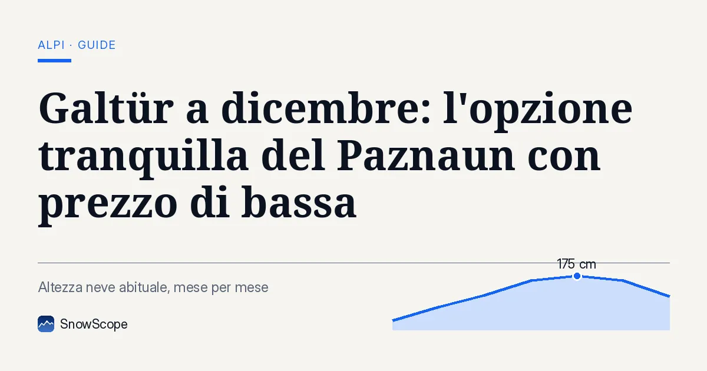

Galtür a dicembre: l'opzione tranquilla del Paznaun con prezzo di bassa
Galtür si trova all'estremità tranquilla della valle della Paznaun. Il 15 dicembre in un anno tipico, la mezza montagna tiene 55 cm e la vetta raggiunge 73 cm. Lo skipass giornaliero di bassa stagione costa EUR 55,50 fino al 18 dicembre, rendendolo una delle settimane più economiche in una stazione d'alta quota del Tirolo.
Le previsioni neve in tempo reale per Galtür nell'app SnowScopeAltezza neve, allerte powder e mappa 3D, gratis.
Neve a dicembre: meglio di quanto si pensi
Gli sciatori spesso trascurano Galtür come una piccola stazione familiare senza neve abbondante. I dati di 46 inverni raccontano una storia diversa per dicembre. Alla mezza montagna (1961 m), il 93 % degli inverni ha avuto 30 cm o più nella settimana del 15-21 dicembre, e il 96 % ne ha tenuti 30 cm entro la settimana di Natale. In vetta (2295 m), queste percentuali raggiungono il 98 % e il 100 %.
La base a 1628 m è più lenta a formarsi: solo il 54 % degli inverni ha avuto 30 cm nella prima settimana di dicembre. La data abituale del primo giorno con copertura solida in base è il 28 novembre. Ma da metà dicembre in poi, la base si assesta anche lì. Entro la settimana di Natale, l'85 % degli inverni ha avuto 30 cm o più alla base.


Profondità durante il mese
Un 15 dicembre tipico porta 40 cm alla base, 55 cm alla mezza montagna e 73 cm in vetta. Entro il 24 dicembre, queste cifre crescono a 54 cm, 74 cm e 88 cm.
La settimana di Natale è quando la profondità raggiunge il picco ovunque. La mezza montagna tiene solitamente 30 cm o più nel 96 % degli inverni quella settimana, e 60 cm o più nel 67 %. In vetta, il 100 % degli inverni ha avuto 30 cm o più, e l'83 % ne ha tenuti 60 cm o più—vera neve da sciare.
La finestra di bassa stagione
La stazione apre il 4 dicembre 2026. La bassa stagione dura fino al 18 dicembre, con uno skipass giornaliero a EUR 55,50 e uno skipass di 6 giorni a EUR 258. Dal 19 dicembre, i prezzi salgono a EUR 58,50 e EUR 286,50. Per una settimana a metà dicembre, risparmi EUR 30 su uno skipass di 6 giorni arrivando presto.
Questi sono tra i prezzi più bassi per una stazione d'alta quota del Tirolo. La profondità della neve non soffre per il costo inferiore: le probabilità di neve alla mezza montagna nella seconda metà di dicembre sono identiche sia che tu paghi la bassa stagione che la stagione principale.
Come si confronta con Obertauern
Obertauern, 50 km a sud nel Salisburghese, si trova alla stessa base di 1628 m e copre molto più terreno: 87 km di piste tracciate contro i 27 km di Galtür. Ma la neve di dicembre di Obertauern è leggermente meno affidabile. La sua mezza montagna (1962 m) tiene 43 cm il 15 dicembre in un anno tipico, e solo l'80 % degli inverni ha avuto 30 cm nella settimana del 15-21 dicembre, rispetto al 93 % di Galtür.
Lo skipass di bassa stagione di 6 giorni di Obertauern costa EUR 331—EUR 73 più di EUR 258 di Galtür. Scegli Obertauern se desideri dimensioni e l'atmosfera del villaggio. Scegli Galtür se apprezzi una settimana tranquilla ed economica con probabilità di dicembre leggermente migliori.
Cosa sapere prima di prenotare
Galtür è piccola: 9 impianti e 27 km di piste. Gli sciatori con una settimana intera potranno esaurire il terreno e vorranno una gita in giornata nelle stazioni più grandi della Paznaun. Pianifica di conseguenza o abbina la tua settimana con un'area vicina.
La valle della Paznaun si trova alla fine di una strada lunga che può chiudersi per il controllo delle valanghe dopo forti nevicate. Dopo copiose nevicate, prevedi un giorno di margine prima o dopo il tuo viaggio. Consulta il bollettino valanghe del Tirolo (lawinen.report) ogni mattina prima di sciare fuori dalle piste tracciate.
Consigli per sciatori
- Prenota la tua settimana tra il 4 e il 18 dicembre per bloccare lo skipass di bassa stagione di 6 giorni a EUR 258.
- Arriva a partire dal 15 dicembre per trovare una solida copertura in base. Se arrivi presto, stai alla mezza montagna o più in alto fino alla data tipica di arrivo del 28 novembre di 30 cm in base.
- Aspettati 73 cm in vetta il 15 dicembre e 88 cm entro il 24 dicembre; le pendici superiori offrono sci consistente durante tutta la bassa stagione.
- Prevedi un giorno di margine nel tuo programma: la strada della valle può chiudersi dopo forti nevicate. Verifica le condizioni prima di viaggiare.
- Leggi il bollettino valanghe del Lawinenwarndienst Vorarlberg (lawinen.report) ogni mattina se hai intenzione di sciare fuori dalle piste tracciate.
Su questi numeri
Le altezze neve delle località sono la neve più alta sui pendii superiori alla data indicata; sono stime per un'area, non una misura in un punto. Le previsioni possono cambiare. Leggi sempre il bollettino valanghe ufficiale prima del fuoripista.
Bollettini valanghe ufficiali: Lawinenwarndienst Vorarlberg
Cita questo articolo
Per ricerca, didattica o stampa: numeri e grafici sono liberamente riutilizzabili con licenza CC BY 4.0 citando così.
SnowScope (2026), Galtür a dicembre: l'opzione tranquilla del Paznaun con prezzo di bassa, https://snowscope.app/blog/it/2026/11/galtuer-december-skiing-quiet-paznaun-budget.html, consultato il 2026-11-14
SnowScope (Atlas Labs). (2026, November 14). Galtür a dicembre: l'opzione tranquilla del Paznaun con prezzo di bassa. SnowScope snow reports. https://snowscope.app/blog/it/2026/11/galtuer-december-skiing-quiet-paznaun-budget.html
BibTeX
@misc{snowscope2026galtuerdecemberskiingqui,
author = {{SnowScope (Atlas Labs)}},
title = {Galtür a dicembre: l'opzione tranquilla del Paznaun con prezzo di bassa},
year = {2026},
month = nov,
howpublished = {\url{https://snowscope.app/blog/it/2026/11/galtuer-december-skiing-quiet-paznaun-budget.html}},
note = {Published 2026-11-14 13:29 UTC; accessed 2026-11-14}
}· CC BY 4.0 · Metodi, dati e strumenti →
Galtür: neve e temperatura per quota, quest'inverno vs lo scorso (strumenti) →
Segui Galtür
Gratis: un messaggio quando arriva la neve e il meteo ogni mattina.